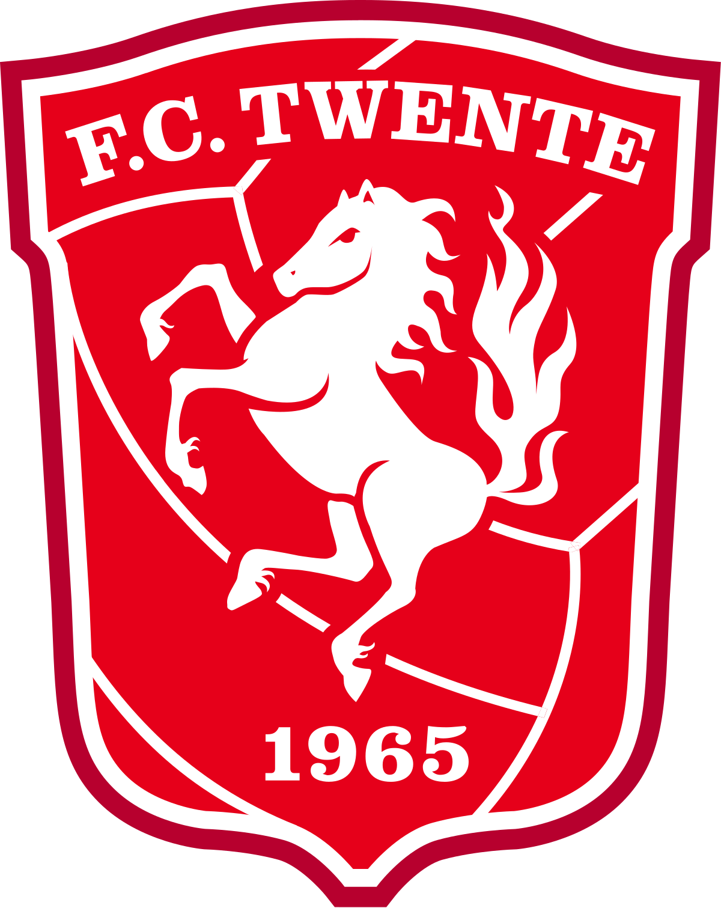
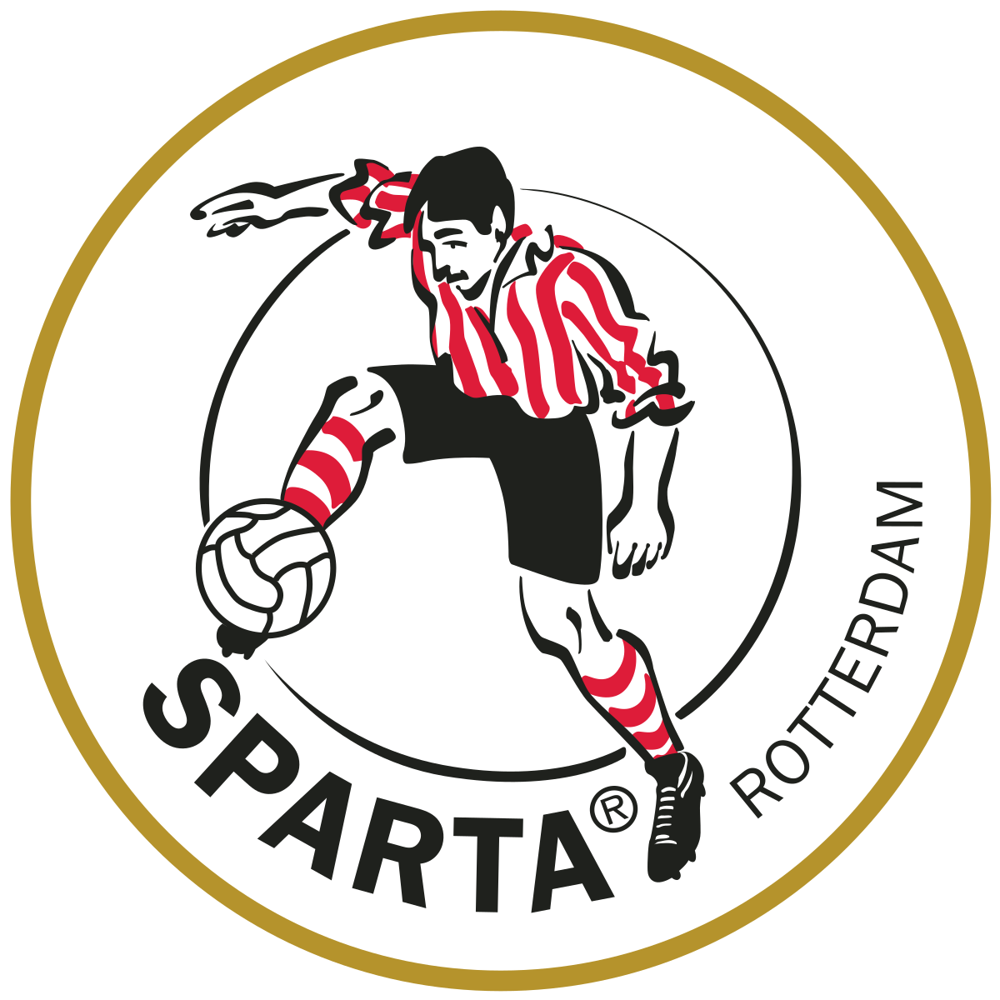
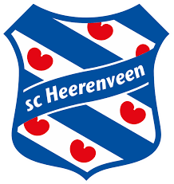
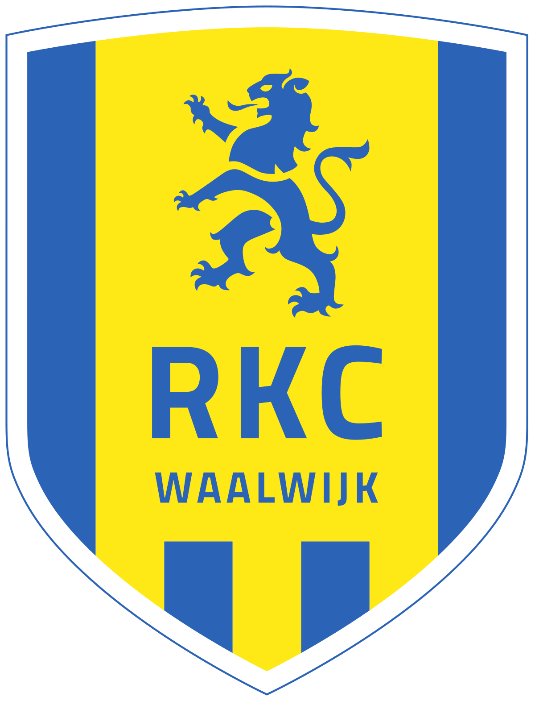
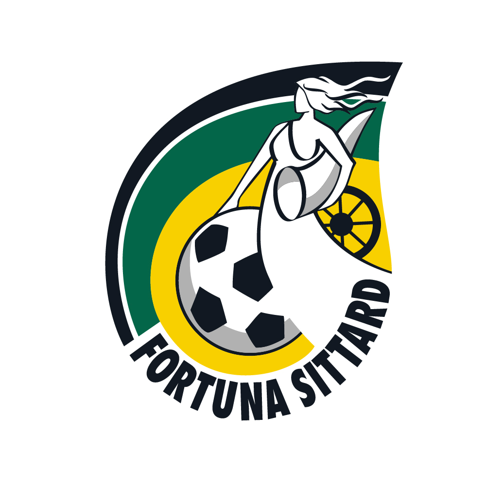
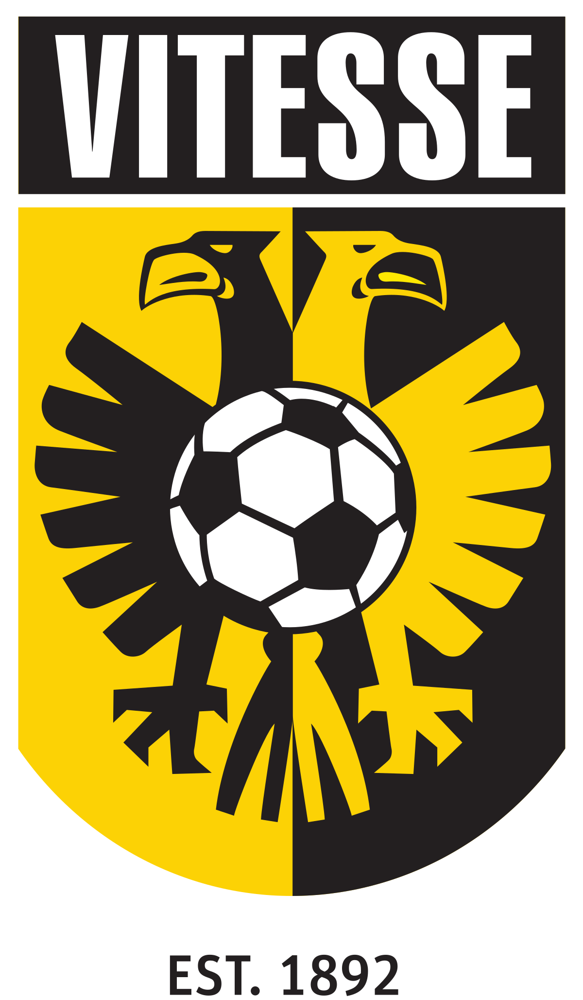
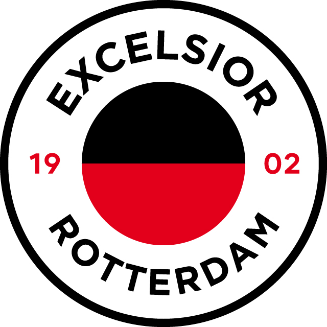
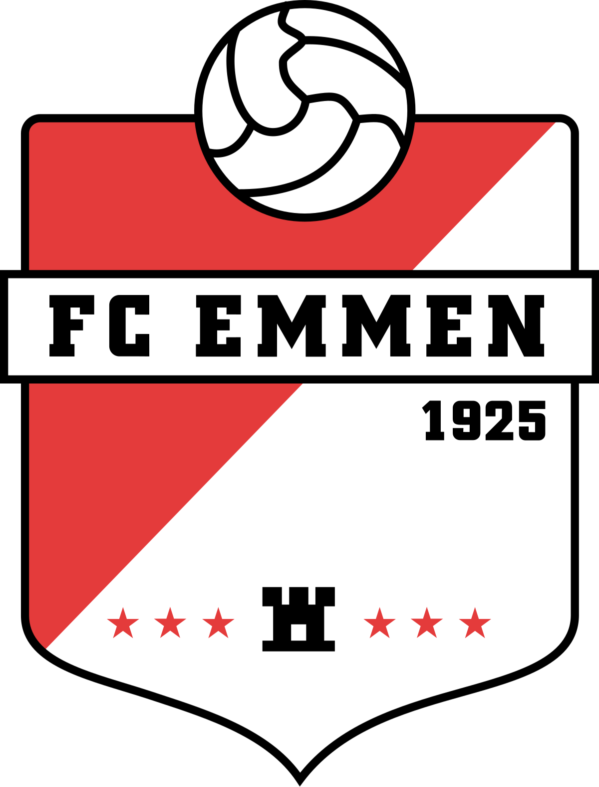
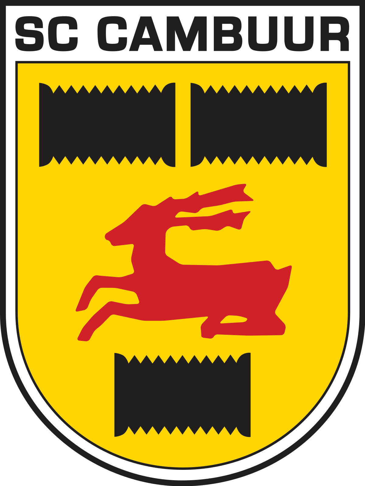
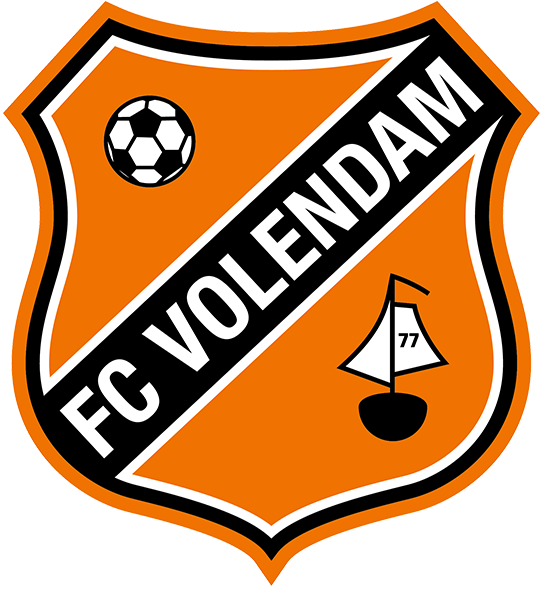

De stand van de Eredivisie voor de winterstop
1 Feyenoord
Feyenoord
2  Ajax
Ajax
3  PSV
PSV
4  AZ
AZ
5  Fc Twente
6  Sparta Rotterdam
7  FC Utrecht
FC Utrecht
8  SC Heerenveen
9  NEC
NEC
10  RKC Waalwijk
11  Go Ahead Eagles
Go Ahead Eagles
12  Fortuna Sittard
13  Vitesse
14  Excelsior
15  Fc Groningen
Fc Groningen
16  FC Emmen
17  SC Cambuur
18  FC Volendam